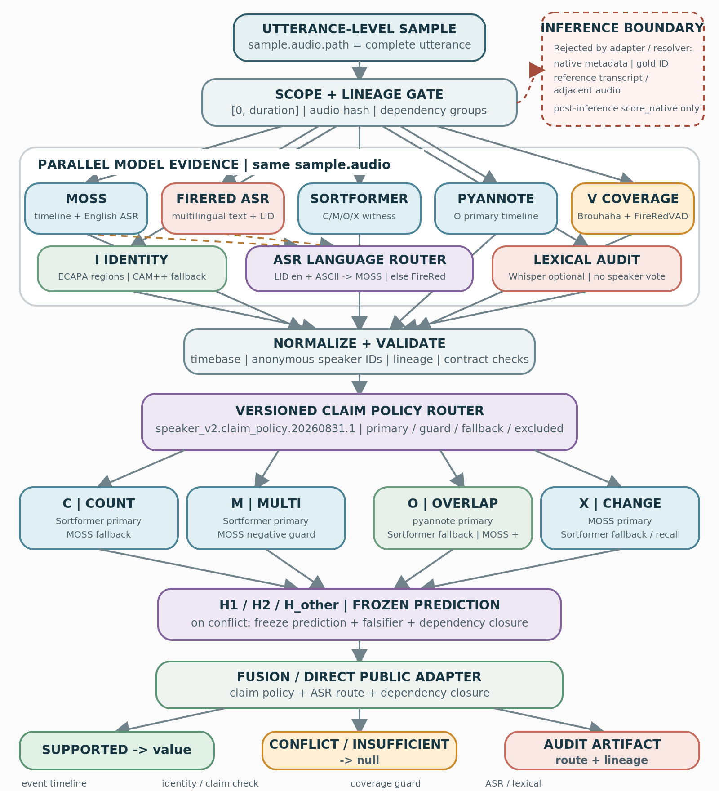

sample.audio.path；native/gold/reference 只允许 post-inference 评测，证据门禁未齐即 abstain。一句话结论：v2 不是“再加几路模型投票”，而是把 timeline、身份、覆盖和校准拆成可审计证据角色，再用版本化 policy 决定每个 claim 的 primary、guard、fallback 与 excluded source。
当前接口、路由、artifact、直接公开输出和双路 ASR 已接入；1k fusion、非 AMI 与 standalone 默认 profile 切换仍作为后续质量观测。
只读当前 utterance 音频，范围为 [0, duration]。
guards 第一版只记录诊断，不额外计票。
supported 且值合法时直接发布；conflicted/insufficient 映射为 null。
目标：在不改变 utterance-level 输入契约的前提下，将“所有 timeline 对所有标签等权”改为 claim-aware resolver；同时把双路 ASR、ECAPA 身份链路、Brouhaha 覆盖链路和可复现 artifact 接入同一框架。
policy：speaker_v2.claim_policy.20260831.1 · standalone 默认 profile：legacy-shadow · public adapter：enabled
| 维度 | 旧 v2 行为 | Speaker v2 claim-aware 行为 |
|---|---|---|
| 证据组织 | timeline 列表基本全局参与，标签从共同摘要派生。 | 每个 claim 显式配置 primary / guard / fallback / excluded。 |
| 冲突处理 | 依赖 evidence 顺序或总置信度继续融合。 | 先冻结 claim-local H1/H2/Hother prediction，再调用高区分度独立检查。 |
| 身份与覆盖 | 身份、VAD 容易被误当成 speaker event 票。 | ECAPA/CAM++ 只做 I；Brouhaha/FireRed 只做 V；能力边界写入 evidence。 |
| 失败回退 | 模型缺失可能影响全局链路。 | 只触发该 claim 的有序 fallback；其他 claim 保持各自路由。 |
| 可复现性 | 运行 profile 和模型职责不够显式。 | fusion / certification / run manifest 固化 profile、policy version/hash、lineage 和模型 inventory。 |
只读取当前 sample.audio.path；不拼接相邻 utterance，不借用跨音频 speaker ID、embedding 或 transcript。
共享 checkpoint、joint generation 或派生字段不重复计票；dependency group 和 lineage 进入 artifact。
claim 只使用版本化 primary / guard / fallback；冲突、证据不足或非法派生保持 null。
claim policy 的可决策结果直接发布；冲突或证据不足的字段保持 null，route 与 lineage 始终写入 artifact。

实际执行分四段：
sample.audio.path，计算 duration、audio hash 和 sample-local scope。ASR 路由：只有 FireRed LID 明确为 en 且 FireRed 文本为 ASCII-English 时选择 MOSS；中文、混合、非拉丁或 unknown 选择 FireRed。一路失败时回退另一条，并记录两路候选、language_error 与 fallback 原因。
交叉验证不是模型数量，而是不同证据角色共同满足一个 claim。以下是 quality-shadow 的冻结路由；guard 当前只写诊断，guards_affect_candidate=false。
| Claim | Primary | Guard / secondary | Fallback / excluded | 输出 |
|---|---|---|---|---|
Cspeaker_count | Sortformer | — | MOSS fallback pyannote excluded（diagnostic） | 内部 count candidate |
Mmulti_speaker | Sortformer | MOSS negative false-positive guard | 无 fallback pyannote excluded | 事件候选 |
Ospeaker_overlap | pyannote license pending，shadow only | Sortformer secondary witness；MOSS positive-only corroboration | Sortformer fallback MOSS negative 不得 veto | 重叠候选 |
Xspeaker_change | MOSS count / localization | Sortformer recall witness | Sortformer fallback pyannote excluded | change 候选 |
ECAPA primary：从 C policy 选出的 predicted timeline 盲选 non-overlap regions，输出 comparison；拒绝 native/gold/reference 字段，不产生 C/M/O/X/V 票。CAM++ 保留 legacy / 中文 fallback。
Brouhaha primary：只声明 speech_coverage；FireRedVAD 保留为 low-FA / boundary guard。两者都不能直接产生 speaker event vote。
| Profile | 启用模型 | 定位 |
|---|---|---|
legacy-shadow | MOSS / FireRedASR / FireRedVAD / CAM++ / Whisper / Sortformer / pyannote | 回滚与兼容基线；ECAPA/Brouhaha 关闭 |
quality-shadow | MOSS / FireRedASR / FireRedVAD / Sortformer / pyannote / ECAPA / Brouhaha | 候选质量 profile；CAM++/Whisper 关闭 |
lean-shadow | FireRedASR / Sortformer / pyannote / ECAPA / Brouhaha | 成本优先；MOSS 关闭，X 退化为 Sortformer 单路 |
| Evidence lane | 允许回答 |
|---|---|
| Timeline / event | MOSS、Sortformer、pyannote：C/M/O/X candidate 与局部事件。 |
| Identity | ECAPA / CAM++：候选片段是否为不同 speaker；不产 timeline。 |
| Coverage | Brouhaha / FireRedVAD：speech union、silence、边界与覆盖分母。 |
| ASR / lexical | MOSS / FireRedASR2-AED：双路文本候选与语言路由；Whisper 可选审计。FireRedASR 不构成 speaker vote。 |
| 状态 | 公开映射 |
|---|---|
| supported | candidate 可决策且值合法 → 直接发布 |
| conflicted | 合格来源冲突 → null，定向复核 |
| insufficient | 输入、适用性或质量不足 → null |
| Artifact | 固定内容 | 用途 |
|---|---|---|
| Evidence | 模型版本 / SHA256、capabilities、scope、audio hash、runtime、dependency groups | 逐路审计与失败定位 |
| Fusion | 完整 claims、route decision source、fallback reason、guard/excluded observations | 解释每个 claim 如何得出 |
| Certification | policy version/hash、状态、public adapter 映射 | 确定性发布边界 |
| Run manifest | profile defaults、9 路 enabled/disabled、配置、禁用原因、policy hash | 复现、回滚与部署审计 |
这是集成 smoke，不是上线结论。 在无可用 GPU 的节点上，以 CPU 跑通一条包含多人、重叠和 speaker change 的 AMI utterance；native 标注只在 inference 后用于 evaluation-only 对照。
| 检查项 | 真实结果 |
|---|---|
| Evidence status | MOSS、Sortformer、pyannote、FireRedVAD、ECAPA、Brouhaha 均为 estimated；这是 FireRedASR 接入前的历史 smoke，CAM++ / Whisper 按 profile 明确 disabled。 |
| 实际 route source | C = Sortformer；M = Sortformer；O = pyannote；X = MOSS，符合 quality policy。 |
| Evaluation-only | MOSS/Sortformer count=3，pyannote count=2；三路 M/O/X bool 与 native reference 一致，但 native 未进入 resolver。 |
| ECAPA I | 4 个 predicted non-overlap regions、6 个 comparisons；native metadata 未进入；predicted-region gate=false，counts_for_certification=false。 |
| Brouhaha V | coverage ratio 0.786535；FireRed 对照 0.721096；只提供 speech_coverage。 |
| Certification / public | 该 2026-08-17 历史 smoke 的四个内部 claim 均为 supported，当时 public speaker 字段为 null；2026-08-20 起可决策结果已改为直接发布。 |
pyannote TorchCodec、Brouhaha 训练 runtime 版本和 Matplotlib cache 警告；没有导致该条 evidence 缺失，仍需纳入后续稳定性门禁。
fusion、certification、run manifest 的 profile / policy version / policy hash 一致；部署清单已登记 smoke 结果与 SHA256。
| Gate | 当前状态 | 说明 |
|---|---|---|
| G0 · assets | PASS | 新模型 checkpoint / runtime hash 已核验。 |
| G1 · adapters | PASS | 工程接线、worker、artifact、双路 ASR 和 112/112 speaker-v2 回归通过。 |
| G2 · integrated shadow | PARTIAL | 已通过 1 条真实 quality smoke；分层 smoke 与 1k fusion 尚未完成。 |
| G3 · calibration / non-AMI | BLOCKED | ECAPA predicted-region、1k ablation、非 AMI meeting-separated 和 pyannote license 待补。 |
| G4 · standalone 默认切换 | PENDING | 统计 CI、失败率、资源成本和最终 manifest 审核仍用于决定是否把 standalone 默认从 legacy 改为 quality；主 tagging 已默认 quality，不阻断当前直接输出。 |
回滚：只需切换到 --profile legacy-shadow。旧模型、ECAPA/Brouhaha 资产、公共 subprocess worker、历史 artifact 和 2026-08-13 snapshot 均保留。
profile 名称保留 shadow 仅用于兼容与回滚；2026-08-20 起 public_adapter_enabled=true。